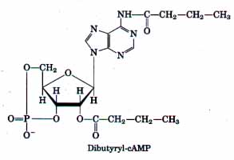

In mammals there is a division of metabolic labor among specialized tissues and organs. Coordination of the body's diverse metabolic activities is accomplished by hormonal signals that circulate in the blood. The liver is the central distributing and processing organ for nutrients. Sugars and amino acids produced in digestion cross the intestinal epithelium and enter the blood, which carries them to the liver. Some triacylglycerols derived from ingested lipids also make their way to the liver, where the constituent fatty acids are used in a variety of processes. Glucose-6-phosphate is the key intermediate in carbohydrate metabolism. It may be polymerized into glycogen, dephosphorylated to blood glucose, or converted to fatty acids via acetylCoA. It may undergo degradation by glycolysis and the citric acid cycle to yield ATP energy or by the pentose phosphate pathway to yield pentoses and NADPH. Amino acids are used to synthesize liver and plasma proteins, or their carbon skeletons may be converted into glucose and glycogen by gluconeogenesis; the ammonia formed by their deamination is converted into urea. Fatty acids may be converted by the liver into other triacylglycerols, cholesterol, or plasma lipoproteins for transport to and storage in adipose tissue. They may also be oxidized to yield ATP, and to form ketone bodies to be circulated to other tissues.
Skeletal muscle is specialized to produce ATP for mechanical work. During strenuous muscular activity, glycogen is the ultimate fuel and is fermented into lactate, supplying ATP. During recovery the lactate is reconverted (through gluconeogenesis) to glycogen and glucose in the liver. Phosphocreatine is an immediate source of ATP during active contraction. Heart muscle obtains all of its ATP from oxidative phosphorylation. The brain uses only glucose and β-hydroxybutyrate as fuels, the latter being important during fasting or starvation. The brain uses most of its ATP energy for the active transport of Na+ ` and K+ and the maintenance of the electrical potential of neuronal membranes. The blood links all of the organs, carrying nutrients, waste products, and hormonal signals between them.
Hormones are chemical messengers (peptides, amines, or steroids) secreted by certain tissues into the blood, serving to regulate the activity of other tissues. They act in a hierarchy of functions. Nerve impulses stimulate the hypothalamus to send specific hormones to the pituitary gland, stimulating (or inhibiting) the release of tropic hormones. The anterior pituitary hormones in turn stimulate other endocrine glands (thyroid, adrenals, pancreas) to secrete their characteristic hormones, which in turn stimulate specific target tissues.
The concentration of glucose in the blood is hormonally regulated. Fluctuations in blood glucose (which is normally about 80 mg/100 mL or 4.5 mM) due to dietary uptake or vigorous exercise are counterbalanced by a variety of hormonally triggered changes in the metabolism of several organs. Epinephrine prepares the body for increased activity by mobilizing blood glucose from glycogen and other precursors. Low blood glucose results in the release of glucagon, which stimulates glucose release from liver glycogen and shifts the fuel metabolism in liver and muscle to fatty acids, sparing glucose for use by the brain. In prolonged fasting, triacylglycerols become the principal fuels; the liver converts the fatty acids to ketone bodies for export to other tissues, including the brain. High blood glucose elicits the release of insulin, which speeds the uptake of glucose by tissues and favors the storage of fuels as glycogen and triacylglycerols. In untreated diabetes, insulin is either not produced or is not recognized by the tissues, and the utilization of blood glucose is compromised. When blood glucose levels are high, glucose is excreted intact into the urine. Tissues then depend upon fatty acids for fuel (producing ketone bodies) and degrade cellular proteins to make glucose from their glucogenic amino acids. Untreated diabetes is characterized by high glucose levels in the blood and urine and the production and excretion of ketone bodies.
Hormones act through a small number of fundamentally similar mechanisms. Epinephrine binds to specific β-adrenergic receptors on the outer face of hepatocytes and myocytes. A stimulatory GTPbinding protein (Gs) mediates between the adrenergic receptor and adenylate cyclase on the inner face of the plasma membrane. When the adrenergic receptor is occupied, adenylate cyclase is activated and converts ATP to cAMP (the second messenger), which then activates the cAMP-dependent protein kinase. This protein kinase phosphorylates and activates inactive phosphorylase b kinase, which in a subsequent step phosphorylates and activates glycogen phosphorylase. Cyclic nucleotide phosphodiesterase terminates the signal by converting cAMP to AMP. The cAMP-dependent protein kinase also phosphorylates and regulates a number of other enzymes present in target tissues. (Glucagon acts by an essentially similar mechanism except that the tissue distribution of glucagon receptors is different; this hormone acts primarily on the liver.) This cascade of events, in which a single molecule of hormone activates a catalyst that in turn activates another catalyst and so on, results in large signal amplification; this is characteristic of all hormone-activated systems. Cyclic GMP acts as the second messenger for other hormones, by a similar mechanism.
Protein phosphorylation is a universal mechanism for rapid and reversible enzyme regulation. To reverse the effects of signal-stimulated protein kinases, cells contain a variety of phosphatases. These enzymes, too, are subject to regulation by extracellular and intracellular signals.
The insulin receptor represents a second signaltransducing mechanism. The receptor is an integral protein of the plasma membrane. Binding of insulin to its extracellular domain activates a tyrosine-specific protein kinase in the receptor's cytosolic domain. This kinase activates several protein kinases by phosphorylating specific Tyr residues.
The phosphorylated protein kinases bring about changes in metabolism by phosphorylating additional key enzymes, altering their enzymatic activities.
A third general class of hormone mechanisms involves the coupling of hormone receptors, via another group of GTP-binding proteins, to a phospholipase C of the plasma membrane. Hormone binding activates this enzyme, which hydrolyzes inositol-containing phospholipids in the plasma membrane. This generates two second messengers: diacylglycerol, which activates protein kinase C, and inositol-1,4,5-trisphosphate (IP3), which causes the release of Ca2+ sequestered in the endoplasmic reticulum. Ca2+ is a common second messenger in hormone-sensitive cells and in neural signaling; it alters the enzymatic activities of specific protein kinases. Calmodulin is a small Ca2+ binding subunit of a number of Ca2+-dependent enzymes.
The fourth general transduction mechanism triggered by hormones is the opening of hormonesensitive ion channels. The nicotinic acetylcholine receptor is a ligand-gated ion channel, which, when occupied by acetylcholine, allows transmembrane passage of Na+ and K+ ions and consequent depolarization of the target cell. A wave of depolarization sweeps along nerves through the action of voltage-gated Na+ and Ca2+ ion channels, triggering neurotransmitter release.
A variety of pathological conditions are associated with defects in signal-transduction mechanisms. Some bacterial toxins interfere with signal transductions. Oncogenes in a cell's DNA permit uncontrolled cell division, possibly through formation of defective signal-transducing proteins that are insensitive to modulation by growth factors or hormonal signals. Tumor promoters also interfere with cell regulation and growth.
Steroid hormones enter cells and bind to specific receptor proteins. The hormone-receptor complex binds specific regions of nuclear DNA called hormone response elements and regulates the expression of nearby genes. Tamoxifen and RU486 are drugs that act as steroid hormone antagonists.
General Background and History
Molecular Biology of Signal Transduction. (1988) Cold Spring Harb. Symp. Quant. Biol. 53.
This entire uolume is filled with short research and reuiew papers on a wide uariety of signal-transducing systems, from bacteria to humans.
Nishizuka, Y., Tanaka, C., & Endo, M. (eds) (1990) The Biology and Medicine of Signal Transduction, Adv. Second Messenger Phosphoprotein Res., 24.
A collection of papers on receptor-transducer systems and the medical effects of defectiue signal transducers.
Sutherland, E.W. (1972) Studies on the mechanisms of hormone action. Science 177, 401-408.
The author's Nobel lecture, describing the classic experiments on cAMP.
Wilson, J.D. & Foster, D.W. (eds) (1992) Williams Textbook of Endocrinology, 8th edn, W.B. Saunders Company, Philadelphia.
Especially releuant are Chapter 1, an introduction to hormonal regulation; Chapter 3, on the mechanism of action of steroid hormones; and Chapter 4, on the mechanisms of hormones that act at the cell surface.
Yalow, R.S. (1978) Radioimmunoassay: a probe for the fine structure of biologic systems. Science 200, 1236-1245.
A history of the development of radioimmunoassays; the author's Nobel lecture.
Tissue-Specific Metabolism: Diuision of Labor
Arias, I.M., Jakoby, W.B., Popper, H., Schachter, D., & Shafritz, D.A. (eds) (1988) The Liver: Biology and Pathobiology, 2nd edn, Raven Press, New York.
An advanced-level text; includes chapters on the metabolism of carbohydrates, fats, and proteins in the liver.
Hormones: Communication among Cells and Tissues
Crapo, L. (1985) Hormones: The Messengers of Life, W.H. Freeman and Company, New York.
A short, entertaining account of the history and recent state of hormone research.
Snyder, S.H. (1985) The molecular basis of communication between cells. Sci. Am. 253 (October), 132-141.
An introductory-leuel discussion of the human endocrine system.
Hormonal Regulation of Fuel Metabolism
Harris, R.A. & Crabb, D.W. (1992) Metabolic interrelationships. In Textbook of Biochemistry with Clinical Correlations, 3rd edn (Devlin, T.M., ed), pp. 576-606, John Wiley & Sons, Inc., New York.
A description of the metabolic interplay among human tissues during normal metabolism, and the effect on tissue-specific energy metabolism of the stresses of exercise, lactation, diabetes, and renal disease.
Pilkis, S.J. & Claus, T.H. (1991) Hepatic gluconeogenesis/glycolysis: regulation and structure/function relationships of substrate cycle enzymes. Annu. Rev. Nutr. 11, 465-515.
A review at the advanced level.
Roach, P.J. (1990) Control of glycogen synthase by hierarchal protein phosphorylation. FASEB J. 4, 2961-2968.
Phosphorylation of one enzyme at seueral positions by several different protein kinases can produce finely graded changes in enzyme activity.
Molecular Mechanisms of Signul Transduction
Aaronson, S.A. (1991) Growth factors and cancer. Science 254, 1146-1153.
A clear description of defects in the signal-transducing mechanisms that regulate cell division, which result from mutations in the genes for growth-factor receptors.
Becker, A.B. & Roth, R.A. (1990) Insulin receptor structure and function in normal and pathological conditions. Annu. Reu. Med. 41, 99-115.
A brief description of the structure of the receptor and its gene, and a discussion of the clinical syndromes associated with receptor defects.
Berridge, M.J. (1985) The molecular basis of communication within the cell. Sci. Am. 253 (October), 142-152.
An introduction to the transductions mediated by adenylate cyclase, guanylate cyclase, and phospholipase C.
Berridge, M.J. & Irvine, R.F. (1989) Inositol phosphates and cell signalling. Nature 341, 197-205.
Not the latest, but one of the best descriptions of the role of inositol phospholipids in signal transduction.
Brent, G.A., Moore, D.D., & Larsen, P.R. (1991) Thyroid hormone regulation of gene expression. Annu. Rev. Physiol. 53, 17-36.
An advanced discussion.
Collins, S., Lohse, M.J., O'Dowd, B., Caron, M.G., & Lefkowitz, R.J. (1991) Structure and regulation of G protein-coupled receptors: the (3z-adrenergic receptor as a model. Vitam. Horm. 46, 1-39.
An advanced discussion.
Fisher, S.K., Heacock, A.M., & Agranoff, B.W. (1992) Inositol lipids and signal transduction in the nervous system: an update. J. Neurochem. 58, 1838.
A reuiew of inositol phospholipids in signaling, including a good description of the various phosphorylated derivatives of inositol and their functions as second messengers; advanced leuel.
Gilman, A.G. (1989) G proteins and regulation of adenylyl cyclase. JAMA 262, 1819-1825.
Hille, B. (1991) Ionic Channels of Excitable Membranes, 2nd edn, Sinauer Associates, Sunderland, MA.
Very broad couerage, at an intermediate level.
Hollenberg, M.D. (1991) Structure-activity relationships for transmembrane signaling: the receptor's turn. FASEB J. 5, 178-186.
A description of how information about the amino acid sequences of receptors, derived from cloning receptor genes, can be used to discover structural bases for receptor interactions with ligands, G proteins, and other elements of a transducing system.
Kennelly, P.J. & Krebs, E.G. (1991) Consensus sequences as substrate specificity determinants for protein kinases and protein phosphatases. J. Biol. Chem. 266, 15555-15558.
A concise summary of the sequence specificity of protein kinases.
Krebs, E.G. (1989) Role of the cyclic AMPdependent protein kinase in signal transduction. JAMA 262, 1815-1818.
A clear account of the research on protein kinase A and its history.
Linder, M.E. & Gilman, A.G. (1992) G proteins. Sci. Am. 267 (July), 56-65.
An introductory level description of the discovery and functions of GTP-binding proteins.
O'Malley, B.W., Tsai, S.Y., Bagchi, M., Weigel, N.L., Schrader, W.T., & Tsai, M.-J. (1991) Molecular mechanism of action of a steroid hormone receptor. Recent Prog. Horm. Res. 47, 1-26.
A brief history of the discovery of steroid hormone receptors and theirgenes, and a review of the effects of the hormone-receptor complex on mRNA and protein synthesis in vitro.
Rasmussen, H. (1989) The cycling of calcium as an intracellular messenger. Sci. Am. 261 (October), 66-73.
An introduction to the role of Ca2+ as a second messenger.
Snyder, S.H. & Bredt, D.S. (1992) Biological roles of nitric oxide. Sci. Am. 266 (May), 68-77.
An intermediate-level reuiew of the role of NO as a second messenger.
Taylor, S.S., Buechler, J.A., & Yonemoto, W. (1990) cAMP-dependent protein kinase: framework for a diverse family of regulatory enzymes. Annu. Rev. Biochem. 59, 971-1005.
An advanced review of the structure and function of protein kinase A and a comparison of its activation mechanism and catalytic mechanism with those of other protein kinases.
Ulmann, A., Teutsch, G., & Philibert, D. (1990) RU 486. Sci. Am. 262 (June), 42-48.
The effects of this steroid antagonist, the "morningafter pill," on the female reproductive system; an introductson.
Ullrich, A. & Schlessinger, J. (1990) Signal transduction by receptors with tyrosine kinase activity. Cell 61, 203-212.
A review of the common structural and functional features of receptors in the insulin receptor family.
1. ATP and Phosphocreatine as Sources of Energy for Muscle In contracting skeletal muscle, the concentration of phosphocreatine drops while the concentration of ATP remains fairly constant. Explain how this happens.
In a classic experiment, Robert Davies found that if the muscle is first treated with 1-fluoro-2,4dinitrobenzene (see Fig. 5-14), the concentration of ATP in the muscle declines rapidly, whereas the concentration of phosphocreatine remains unchanged during a series of contractions. Suggest an explanation.
2. Metabolism of Glutamate in the Brain Glutamate in the blood flowing into the brain is transformed into glutamine, which appears in the blood leaving the brain. What is accomplished by this metabolic conversion? How does it take place? Actually, the brain can generate more glutamine than can be made from the glutamate entering in the blood. How does this extra glutamine arise? (Hint: You may want to review amino acid catabolism in Chapter 17. Recall that NH3 is very toxic to the brain. )
3. Absence of Glycerol Kinase in Adipose Tissue Glycerol-3-phosphate is a key intermediate in the biosynthesis of triacylglycerols. Adipocytes, which are specialized for the synthesis and degradation of triacylglycerols, cannot directly use glycerol because they lack glycerol kinase, which catalyzes the reaction
Glycerol + ATP > glycerol-3-phosphate + ADP
How does adipose tissue obtain the glycerol-3phosphate necessary for triacylglycerol synthesis? Explain.
4. Hyperglycemia in Patients with Acute Pancreatitis Patients with acute pancreatitis are treated by withholding protein from the diet and by intravenous administration of glucose-saline solution. What is the biochemical basis for these measures? Patients undergoing this treatment commonly experience hyperglycemia. Why?
5. Oxygen Consumption during Exercise A sedentary adult consumes about 0.05 L of O2 during a 10 s period. A sprinter, running a 100 m race, consumes about 1 L of O2 during the same time period. After fmishing the race, the sprinter will continue to breathe at an elevated but declining rate for some minutes, consuming an extra 4 L of O2 above the amount consumed by the sedentary individual.
(a) Why do the O2 needs increase dramatically during the sprint?
(b) Why do the O2 demands remain high after the sprint is completed?
6. Thiamin Deficiency and Brain Function Individuals with thiamin deficiency display a number of characteristic neurological signs: loss of reflexes, anxiety, and mental confusion. Suggest a reason why thiamin deficiency is manifested by changes in brain function.
7. Significance of Hormone Concentration Under normal conditions, the human adrenal medulla secretes epinephrine (C9H13N03) at a rate sufficient to maintain a concentration of 10-10M in the circulating blood. To appreciate what that concentration means, calculate the diameter of a round swimming pool, with a water depth of 2 m, that would be needed to dissolve 1 g (about 1 teaspoon) of epinephrine to a concentration equal to that in blood.
8. Regulation of Hormone Leuels in the Blood The half life of most hormones in the blood is relatively short. For example, if radioactively labeled insulin is injected into an animal, one can determine that within 30 min half the hormone has disappeared from the blood.
(a) What is the importance of the relatively rapid inactivation of circulating hormones?
(b) In view of this rapid inactivation, how can the circulating hormone level be kept constant under normal conditions?
(c) In what ways can the organism make possible rapid changes in the level of circulating hormones?
9. Water-Soluble uersus Lipid-Soluble Hormones On the basis of their physical properties, hormones fall into one of two categories: those that are very soluble in water but relatively insoluble in lipids (e.g., epinephrine) and those that are relatively insoluble in water but highly soluble in lipids (e.g., steroid hormones). In their role as regulators of cellular activity, most water-soluble hormones do not penetrate into the interior of their target cells. The lipid-soluble hormones, by contrast, do penetrate into their target cells and ultimately act in the nucleus. What is the correlation between solubility, the location of receptors, and the mode of action of the two classes of hormones?
10. Hormone Experiments in Cell-Free Systems In the 1950s, Earl Sutherland and his colleagues carried out pioneering experiments to elucidate the mechanism of action of epinephrine and glucagon. In the light of our current understanding of hormone action as described in this chapter, interpret each of the experiments described below. Identify the components and indicate the significance of the results.
(a) The addition of epinephrine to a homogenate or broken-cell preparation of normal liver resulted in an increase in the activity of glycogen phosphorylase. However, if the homogenate was first centrifuged at a high speed and epinephrine or glucagon was added to the clear supernatant fraction containing phosphorylase, no increase in phosphorylase activity was observed.
(b) When the particulate fraction sedimented from a liver homogenate by centrifugation was separated and treated with epinephrine, a new substance was produced. This substance was isolated and purified. Unlike epinephrine, this substance activated glycogen phosphorylase when added to the clear supernatant fraction of the homogenate.
(c) The substance obtained from the particulate fraction was heat-stable; that is, heat treatment did not prevent its capacity to activate phosphorylase. (Hint: Would this be the case if the substance were a protein?) The substance appeared nearly identical to a compound obtained when pure ATP was treated with barium hydroxide. (Figure 12-6 will be helpful. )

11. Effect of Dibutyryl-cAMP uersus cAMP on Intact Cells The physiological effects of the hormone epinephrine should in principle be mimicked by the addition of cAMP to the target cells. In practice, the addition of cAMP to intact target cells elicits only a minimal physiological response. Why?When the structurally related derivative dibutyryl-cAMP (shown below) is added to intact cells, the expected physiological responses can readily be seen. Explain the basis for the difference in cellular response to these two substances. Dibutyryl cAMP is a widely used derivative in studies of cAMP function.
12. Effect of Cholera Toxin on Adenylate Cyclase The gram-negative bacterium Vibrio cholerae produces a protein, cholera toxin (Mr 90,000), responsible for the characteristic symptoms of cholera: extensive loss of body water and Na+ through continuous, debilitating diarrhea. If body fluids and Na+ are not replaced, severe dehydration will occur; untreated, the disease is often fatal. When the cholera toxin gains access to the human intestinal tract it binds tightly to specific sites in the plasma membrane of the epithelial cells lining the small intestine, causing adenylate cyclase to undergo activation that persists for hours or days.
(a) What is the effect of cholera toxin on the level of cAMP in the intestinal cells?
(b) Based on the information above, can you suggest how cAMP normally functions in intestinal epithelial cells?
(c) Suggest a possible treatment for cholera. 13. Metabolic Differences in Muscle and Liuer in a `F'ight or Flight" Situation During a "fight or flight" situation, the release of epinephrine promotes glycogen breakdown in the liver, heart, and skeletal muscle. The end product of glycogen breakdown in the liver is glucose. In contrast, the end product in skeletal muscle is pyruvate.
(a) Why are different products of glycogen breakdown observed in the two tissues?
(b) What is the advantage to the organism during a "fight or flight" condition of having these specific glycogen breakdown routes?
14. Excessiue Amounts of Insulin Secretion: Hyperinsulinism Certain malignant tumors of the pancreas cause excessive production of insulin by the β cells. Affected individuals exhibit shaking and trembling, weakness and fatigue, sweating, and hunger. If this condition is prolonged, brain damage occurs.
(a) What is the effect of hyperinsulinism on the metabolism of carbohydrate, amino acids, and lipids by the liver?
(b) What are the causes of the observed symptoms? Suggest why this condition, if prolonged, leads to brain damage.
15. Thermogenesis Caused by Thyroid Hormones Thyroid hormones are intimately involved in regulating the basal metabolic rate. Liver tissue of animals given excess thyroxine shows an increased rate of O2 consumption and increased heat output (thermogenesis), but the ATP concentration in the tissue is normal. Different explanations have been offered for the thermogenic effect of thyroxine. One is that excess thyroid hormone causes uncoupling of oxidative phosphorylation in mitochondria. How could such an effect account for the observations? Another explanation suggests that the thermogenesis is due to an increased rate of ATP utilization by the thyroid-stimulated tissue. Is this a reasonable explanation? Why?
16. Function of Prohormones What are the possible advantages in the synthesis of hormones as prohormones or preprohormones?
17. Action of Aminophylline Aminophylline, a purine derivative resembling theophylline of tea, is often administered together with epinephrine to individuals with acute asthma. What is the purpose and biochemical basis for this treatment?